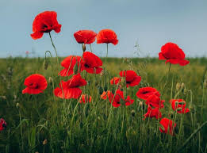

Voici mon poem préféré :
J'apprécie de divers types de littérature, un de mes styles préférées c'est le poem. Il permet d'avoir une une vrai compréhenssion de ce qui ce passe, tout en l'embellisant avec des figures de style et des rhymes. Cependant, de tout les poemes que j'ai lu, il y en a un qui me tient a oeur, ce poème, c'est le poeme de «flanders field» de John Mccrae, un poeme écrit durant la deuxième guerre mondiale pour honoré son amis soldat : Lieutenant Alexis Helmer
In Flanders Fields
In Flanders fields the poppies blow
Between the crosses, row on row,
That mark our place; and in the sky
The larks, still bravely singing, fly
Scarce heard amid the guns below.
We are the Dead. Short days ago
We lived, felt dawn, saw sunset glow,
Loved and were loved, and now we lie,
In Flanders fields.
Take up our quarrel with the foe:
To you from failing hands we throw
The torch; be yours to hold it high.
If ye break faith with us who die
We shall not sleep, though poppies grow
In Flanders fields.

Voici un lien vers ce poem